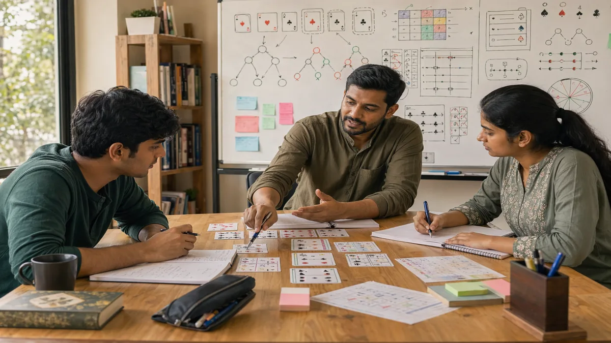
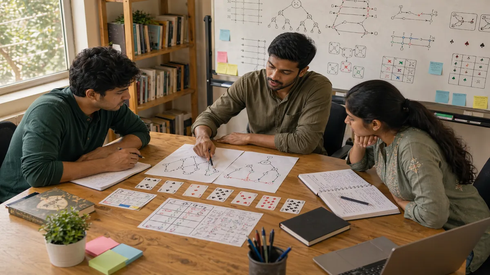
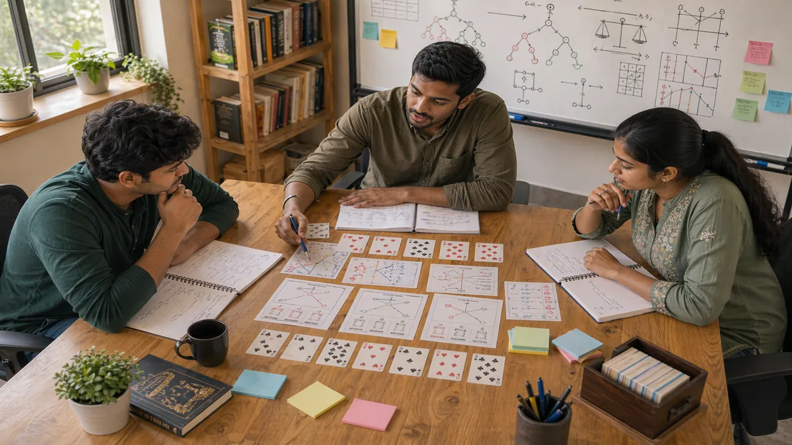

Skill Game Study Hub
Skill Game Strategy India: A Practical Study Hub for Better Decisions
This homepage is organized the way a senior player would review a real session: start with the base habits, clean up repeated leaks, then move into decision quality, awareness, patterns, style, risk, strategy, and advanced judgment only when the base is steady.
Senior Player Notes
How I would use this hub after a difficult session
The useful question is not "what is the clever move?" The useful question is "where did my process first start to drift, and which lesson helps me correct that earlier next time?"
Start where the leak began
If the end of the session looked messy, the real problem often started earlier. Fundamentals, mistakes, and decision quality usually explain more than the final dramatic spot.
Read in the order review naturally unfolds
Base process first, repeated errors second, then awareness, patterns, style, risk, scenarios, strategy, and advanced ideas after the simpler layers already make sense.
Turn every page into one live test
Do not try to carry ten ideas into the next session. Carry one. "Check downside first" is useful. "Play smarter" is not.
Study Library
Pick the lesson that matches the weakness you saw
Every topic below has its own HTML article and its own image. The page summaries are written like coaching notes, so you can move straight from the problem you noticed to the lesson that best fits it.

Skill Gaming Fundamentals
Use this when the session feels unstable or your notes keep tracing back to rushed scanning, weak priorities, or unclear review habits.
Skill Game Common Mistakes
Use this when the same leak keeps returning under different surface situations and you need to name it clearly enough to fix it.

Skill Game Decision Making
Use this when pressure makes you solve the wrong problem, trust weak evidence, or ignore the cost of being wrong.
Skill Game Game Awareness
Use this when you keep seeing only your own plan and missing rhythm changes, tension shifts, or wider position signals.
Skill Game Pattern Recognition
Use this when repeated structures are visible but your reads keep becoming too certain, too quickly, or too vague to act on.
Skill Game Play Styles
Use this when you want to read real tendencies under comfort and pressure instead of relying on broad personality labels.

Skill Game Risk Balance
Use this when a bold line feels tempting but the reward, downside, and recovery path still feel blurry in review.
Skill Game Scenarios
Use this when theory feels too abstract and you need to learn from believable positions, turning points, and specific misreads.
Skill Game Strategic Thinking
Use this when the current move looks fine in isolation but keeps creating awkward future shapes or weak follow-up branches.
Skill Game Advanced Concepts
Use this only after the base process holds up. Advanced ideas should refine judgment, not decorate confusion.
Suggested Reading Order
A study order that mirrors how real improvement usually happens
Review Example
How one bad session usually spreads across several pages here
Imagine a session that ends with one ugly mistake. Review often shows the real story was longer: weak fundamentals made the read unstable, poor decision structure made the risk too large, and then the final spot only exposed the damage already done.
Base leak first
Go to Fundamentals when the earliest problem is weak scanning, unclear priorities, or a review habit that only chases results.
Decision structure second
Go to Decision Making when the key mistake came from solving the wrong problem, trusting thin evidence, or ignoring downside.
Then widen the review
Go to Game Awareness, Pattern Recognition, and Risk Balance once the problem is clearly tied to reading the whole session.
Weekly Routine
A light study rhythm that real players can actually keep
Targeted Paths
Use the hub according to the leak you actually saw
The fastest study path depends on what keeps breaking down in your own review notes.
Rushed choices
Read Fundamentals, then Decision Making, then Risk Balance.
Missed context
Read Game Awareness, then Pattern Recognition, then Scenarios.
Unstable adaptation
Read Play Styles, then Strategic Thinking, then Advanced Concepts.
Search And Learning
Written for discovery, but built to hold up in review
Clear topic language
Each page uses direct headings and natural internal links so search engines can understand the topic without the writing sounding stuffed or artificial.
Real scenario framing
The pages explain what a mistake looks like in live play, why it often feels reasonable at first, and how a better review note would catch it earlier.
Actionable questions
The teaching angle is always practical: what changed, what mattered most, what did I misread, and what one adjustment should I test next session?